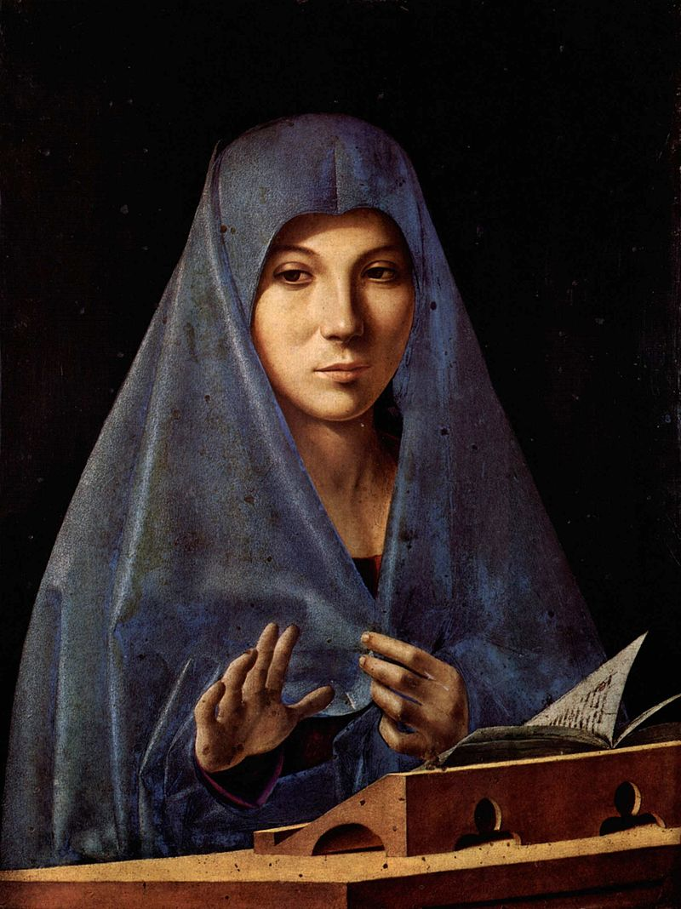

Tout à Jésus par Marie ! |
|
Marie (mère de Jésus)
Marie (en araméen ܡܪܝܡ, Maryam ; en hébreu מרים1, Myriam ; en grec Μαρία, María ; en arabe مريم, Maryam), fille juive de Judée, est la mère de Jésus de Nazareth. Les Églises catholique et orthodoxe accordent une place essentielle à Marie, qu'elles appellent Marie de Nazareth, Sainte Vierge, Vierge Marie, Notre Dame (plus souvent chez les catholiques francophones) ou Mère de Dieu (chez les orthodoxes comme chez les catholiques). Comme pour son fils Jésus, il est difficile d'écrire une biographie de Marie. Cependant, selon la tradition et les recoupements qui peuvent être faits dans les Saintes Écritures, elle est la fille unique de Joachim2, descendant de David3, et d'Anne, descendante d'Aaron. Marie est donc de maison royale et sacerdotale. Une grande partie des traces historiques se trouvent dans les récits apocryphes, qui développent souvent les élaborations présentes dans les textes canoniques du Nouveau Testament, mais qui peuvent aussi reconstituer une certaine trame historique. Dans les Églises catholique et orthodoxe, Marie est l'objet d'un culte particulier, supérieur au simple culte rendu aux saints et aux anges, appelé le culte d'hyperdulie. C'est un des points de divergence important avec le protestantisme et les Églises réformées. Pour les Catholiques, le Canon 1186 du Code de droit canonique dispose qu'il s'agit de la vénération de la Bienheureuse Marie, toujours Vierge, établie par le Christ comme Mère de tous les hommes5
Tel : 79614036
designed by IGIRANEZA Nina
Tel : 79614036